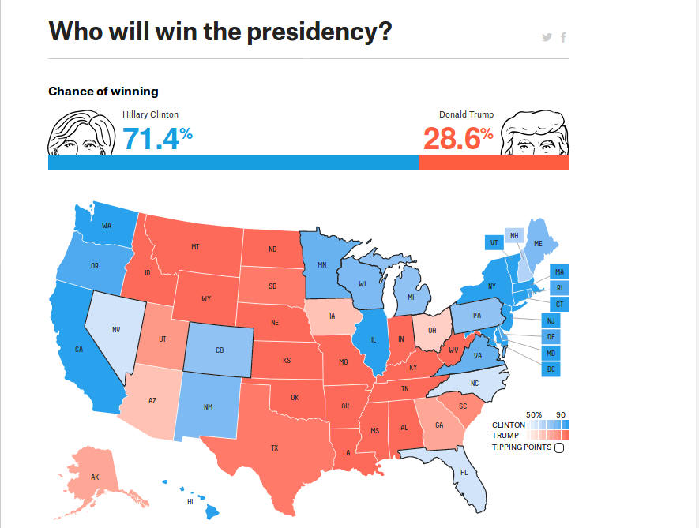
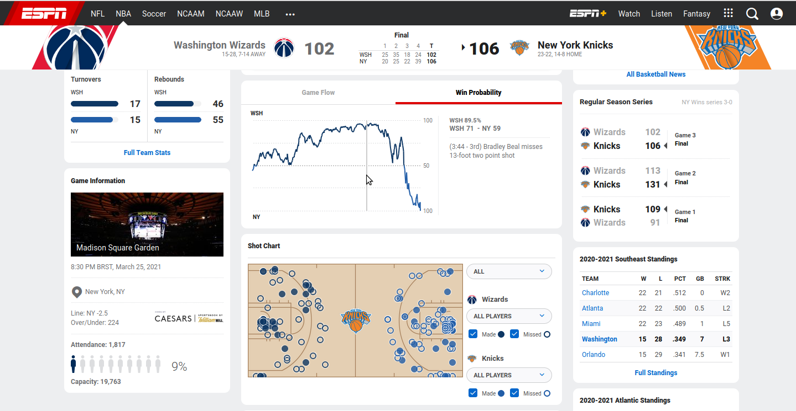

Simulando campeões no Campeonato Brasileiro de 2020
Falando sobre processos aleatórios, podemos fazer afirmações sobre a incerteza de um conjunto desses processos. Por exemplo, ao simular resultados de jogos de futebol com base em variáveis aleatórias, poderíamos simular o resultado de uma partida entre dois times simulando a quantidade de gols que cada um marcaria. Este post explora como realizar simulações de futebol usando R.
Simulação
Estatística
Análise de Dados
R
Data Wrangling
Autor
Bruno Santos
Data de Publicação
29 de março de 2021
Quando falamos de processos aleatórios, tendo em vista a capacidade de gerar possíveis observações dessas variáveis aleatórias, somos capazes de fazer afirmações acerca da incerteza de um conjunto desse processo. Por exemplo, se pensarmos que numa partida de futebol o número de gols que cada time marca é uma variável aleatória, se fizermos uma suposição sobre esse valor, somos capazes de gerar observações desse processo. Nesse sentido, quando dois times se enfrentam poderíamos simular o resultado da partida simulando a quantidade de gols que cada time marcaria nesse suposto encontro. Dessa forma, teremos um resultado simulado do jogo e se fizermos o mesmo procedimento para todos os jogos de um campeonato, podemos obter também um possível campeão simulado, tendo em vista todos os resultados obtidos.
Esse tipo de procedimento é bastante comum e nos ajuda a obter uma direção de quais são os possíveis resultados de um processo aleatório e nos ajuda a falar, por exemplo, quais são os eventos mais prováveis. Esse método de obtenção de probabilidades depende das suposições feitas acerca do processo envolvido e nem sempre é capaz de explicar a realidade de forma exata, pois pode estar baseado em premissas erradas. Quem não se lembra da previsão abaixo do site fivethirtyeight (assim como muitos outros sites) um dia antes das eleições americanas em 2016, em que a candidata Hillary Clinton acabou saindo derrotada?

Para esse exemplo específico, podemos dizer que a maioria (se não todos) dos modelos da época não foram capazes de prever o efeito Trump nas eleições. Nem por isso devemos abandonar esse tipo de previsão, porém devemos ter sempre em mente as suas limitações e também as suas suposições, se possível. O mesmo site fivethirtyeight usa e abusa desse tipo de modelagem: você pode ver as previsões de probabilidade de quem vai sair campeão do torneio universitário masculino e feminino, de ser o campeão da NBA, de vários torneios de futebol ao redor do mundo, inclusive da Austrália. De fato, essa é uma marca registrada de jornalismo de dados nos EUA. Para diversos eventos esportivos é possível inclusive obter estimativas de probabilidade de vitória para cada um dos times que estão jogando basicamente de forma instantânea. A imagem abaixo foi retirada do site da ESPN, entre Washington Wizards e New York Knicks, em que segundo esse site esportivo a probabilidade de vitória do time da capital era igual a 89,5% quando faltavam 3min44s para o fim do terceiro quarto, ainda que os mesmos tenham saído derrotados ao final da partida.

No Brasil, podemos citar o site chancedegol.com.br/, que calcula probabilidades para diversos campeonatos de futebol no Brasil e no exterior também. Outro exemplo foi feito por pesquisadores do departamento de Estatística da UFBA, que criaram o site www.previsaoesportiva.com.br/, porém este parece não estar sendo atualizado atualmente. Havendo outras iniciativas que tivermos notícia, iremos atualizar esse post com novos links.
A ideia desse post é exatamente mostrar um possível modelo para simular os jogos do campeonato brasileiro de 2020. É sempre bom relembrar a frase mais repetida na Estatística de George Box:
All models are wrong, but some are useful.
Pois o nosso objetivo aqui é simplesmente mostrar uma maneira de obter essas probabilidades. Com certeza nossa modelagem não vai ser a única maneira de obtenção dessas probabilidades e outros métodos mais sofisticados poderiam muito bem ser utilizados para estimar esse valor.
Para iniciar, vamos carregar alguns pacotes que serão utilizados nessa análise:
Código
library(highcharter) # fazer gráficos interativoslibrary(dplyr) # fazer manipulação de banco de dadoslibrary(httr) # baixar informações da internetlibrary(rvest) # obter algumas informações de páginas htmllibrary(parallel) # fazer o estudo de simulação em paralelolibrary(tibble) # trabalhar com banco de dados mais amigáveislibrary(janitor) # limpar base de dadoslibrary(stringr) # trabalhar com variáveis de textolibrary(lubridate) # obter informações de dataslibrary(ggplot2) # fazer gráficos de todos os tiposlibrary(gganimate) # fazer animações com gráficos do ggplotlibrary(ggimage) # adicionar imagens nos nossos gráficos
Vamos considerar uma adaptação do código apresentado pelo Júlio Trecenti em sua apresentação na XIV SEMANA DE ESTATÍSTICA, para baixar os dados diretamente do site chancedegol. O vídeo de todas apresentações está disponível no seguinte link.
Código
url_chancedegol <-"https://www.chancedegol.com.br/br20.htm"r <- httr::GET(url_chancedegol)tabelas <- httr::content(r, "text", encoding ="latin1") %>% xml2::read_html() %>% xml2::xml_find_all("//table")dados <- tabelas[[8]] %>% rvest::html_table() %>% tibble::as_tibble()# Primeira linha contém o nome das colunasnames(dados) <-as.character(dados[1, ])dados <- dados[-1, ]# limpando o nome das variáveisdados <- dados %>% janitor::clean_names()
Precisamos fazer algumas alterações no banco de dados para obter as colunas com os gols do time mandante e do time visitante
Código
dados <- dados %>%mutate(gols_mandante =as.numeric(str_split(x, "x", simplify =TRUE)[, 1]),gols_visitante =as.numeric(str_split(x, "x", simplify =TRUE)[, 2]) )
Precisaremos utilizar a variável “Data” em formato Date.
Código
dados <- dados %>%mutate(data =as.Date(data, format ="%d/%m/%Y"))
Se quisermos obter a tabela de classificação de pontos, temos que obter a pontuação dos times mandantes e dos times visitantes, em seguida consolidar isso numa mesma tabela
Código
## Definindo pontos de cada timedados <- dados %>%mutate(pontos_mandante =ifelse(gols_mandante > gols_visitante, 3,ifelse(gols_mandante == gols_visitante, 1,0 ) ),pontos_visitante =ifelse(pontos_mandante ==3, 0,ifelse(pontos_mandante ==1, 1, 3) ) )## criando tabela de pontos do mandantepontos_mandante <- dados %>%group_by(mandante) %>%summarise(pontos_mandante =sum(pontos_mandante)) %>%rename(time = mandante)## criando tabelas de pontos do visitantepontos_visitante <- dados %>%group_by(visitante) %>%summarise(pontos_visitante =sum(pontos_visitante)) %>%rename(time = visitante)## criando tabela consolidadapontos_total <-inner_join(pontos_mandante, pontos_visitante) %>%mutate(pontos = pontos_mandante + pontos_visitante) %>%arrange(desc(pontos))pontos_total
A tibble: 20 x 4
time
pontos_mandante
pontos_visitante
pontos
1
Flamengo
37
34
71
2
Internacional
41
29
70
3
Atlético MG
46
22
68
4
São Paulo
37
29
66
5
Fluminense
38
26
64
6
Grêmio
36
23
59
7
Palmeiras
35
23
58
8
Santos
34
20
54
9
Athletico PR
32
21
53
10
Red Bull Bragantino
35
18
53
11
Ceará
26
26
52
12
Corinthians
31
20
51
13
Atlético GO
27
23
50
14
Bahia
29
15
44
15
Sport
26
16
42
16
Fortaleza
30
11
41
17
Vasco
26
15
41
18
Goiás
23
14
37
19
Coritiba
18
13
31
20
Botafogo
14
13
27
Para começar a nossa simulação, podemos obter uma tabela que nos ajudará a calcular a média de gols feitos e sofridos por cada time ao longo do campeonato. Podemos usar isso como uma métrica do nosso modelo para simular as partidas.
Como o número de gols feitos (ou sofridos) é uma variável discreta, podemos utilizar a distribuição Poisson para gerar seus valores aleatórios. Como modelo inicial, podemos usar a informação média de cada time para gerar um certo valor aleatório. Por exemplo, considerando que o Vasco, para essa data escolhida, tem média de gols igual a 1,19, então poderíamos simular o número de gols em uma partida do Vasco, fazendo simplesmente
Código
set.seed(42)rpois(1, lambda =1.19)
[1] 3
Porém, é melhor gerarmos esse valor dentro de uma função para podermos repetir esse processo um número grande de vezes. Considerando o modo vetorial do R para as funções geradoras de variáveis aleatórias, precisamos passar somente o vetor de médias para simular os gols para cada time de acordo com sua respectiva média. Para entender tal comportamento da função rpois rode o seguinte comando algumas vezes
Uma alteração bem simples poderia considerar outra distribuição de probabilidades para gerar esses gols marcados, como a distribuição Binomial Negativa. Além disso, poderíamos pensar em utilizar os gols sofridos também ao invés dos gols marcados.
Agora, gostaríamos de simular esses gols em diferentes momentos do campeonato, para entender como podemos ter previsões bastante diferentes a depender de quem estava na frente e de quem tinha as melhores médias de gols. Para isso, vamos criar uma sequência de datas, considerando somente terças e sextas (para olhar os resultados sempre depois das rodadas de segunda e quinta), com a ajuda do pacote lubridate. Vamos pegar esses dias entre aproximadamente a rodada 10 e rodada 34 do campeonato.
Agora para cada uma dessas datas precisamos separar os dados entre o que foi observado até aquele momento e o que gostaríamos de simular. Em seguida, quando simularmos os gols dos jogos “no futuro”, precisaremos consolidar os resultados observados até aquela data e aqueles com os gols simulados. Podemos sempre juntar os dois vetores de gols e fazer o mesmo que fizemos anteriormente. Para facilitar essa simulação para diferentes datas, vamos fazer uma função que dependa da data (data_simulacao) e também do número de vezes que gostaríamos de repetir o processo (repeticoes).
Código
simula_campeao_data <-function(replicacoes, data_simulacao) {# Filtra dados reais. dados_observados <-filter(dados, data <= data_simulacao)# Filtra dados "do futuro", a serem simulados, retirando gols e pontos. dados_simular <-filter(dados, data > data_simulacao) %>%select(-gols_mandante, -gols_visitante, -pontos_mandante, -pontos_visitante)# Obtendo média de gols até aquele momento. media_gols_momento <- tabela_gols %>%filter(data < data_simulacao) %>%group_by(time) %>%summarise(media_gols =mean(gols_feitos))# Adiciona coluna de media gols na tabela com os dados a simular.# Note que é preciso obter o valor para cada vetor (mandante e visitante). dados_simular <- dados_simular %>%left_join(media_gols_momento, by =c("mandante"="time")) %>%rename(media_gols_mandante = media_gols) %>%left_join(media_gols_momento, by =c("visitante"="time")) %>%rename(media_gols_visitante = media_gols)# Deixando o processo de simulação todo em uma função para ## ser chamado 'replicacoes' vezes. retorna_campeao_simulacao <-function() {# Simula gols para o time mandante e visitante de acordo as médias obtidas. dados_simular <- dados_simular %>%mutate(gols_mandante =simula_jogos(media_gols_mandante),gols_visitante =simula_jogos(media_gols_visitante) ) %>%# Calcula pontos nos jogos simulados.mutate(pontos_mandante =ifelse(gols_mandante > gols_visitante, 3,ifelse(gols_mandante == gols_visitante, 1,0 ) ),pontos_visitante =ifelse(pontos_mandante ==3, 0,ifelse(pontos_mandante ==1, 1, 3) ) ) %>%select(-media_gols_mandante, -media_gols_visitante)# Junta os dados observados com os dados simulados. dados_consolidados <-rbind.data.frame( dados_observados, dados_simular )# Calcula pontos como foi feito anteriormente. pontos_mandante_s <- dados_consolidados %>%group_by(mandante) %>%summarise(pontos_mandante =sum(pontos_mandante)) %>%rename(time = mandante) pontos_visitante_s <- dados_consolidados %>%group_by(visitante) %>%summarise(pontos_visitante =sum(pontos_visitante)) %>%rename(time = visitante) pontos_total_s <-inner_join(pontos_mandante_s, pontos_visitante_s,by ="time" ) %>%mutate(pontos = pontos_mandante + pontos_visitante) %>%arrange(desc(pontos))# Desconsiderando critérios de desempate para facilitar# Retorna a primeira posição da tabela campeao <- pontos_total_s[1, 1] %>%as.character()return(campeao) }replicate(replicacoes, retorna_campeao_simulacao())}
Agora, precisamos tomar cuidado com o número de repetições no nosso estudo de Monte Carlo. No meu computador, eu posso verificar o tempo de execução para 10000 repetições da simulação fazendo
Note que essa simulação demora cerca de 4 minutos para essa data específica. Embora esse tempo possa variar, porque o número de valores a serem gerados de forma aleatória muda de acordo com a data de simulação, ainda assim devemos esperar por algum tempo para o estudo de Monte Carlo ficar pronto, quando estivermos rodando para várias datas.
Podemos dar uma olhada no resultado dessa primeira data olhando a tabela de frequências para verificar qual time terminou em primeiro lugar na tabela mais vezes.
Notem que Vasco e Atlético-MG apresentaram a maior probabilidade de título, pois esses dois times detinham a melhor média de gols naquele momento. Além disso, percebam que por se tratar de uma simulação até mesmo o Botafogo, que terminou o campeonato em último, teria se sagrado campeão em pelo menos uma oportunidade.
Em seguida, podemos rodar o nosso programa considerando as datas que selecionamos anteriormente. Tendo em vista o maior tempo de processamento, vamos utilizar a função mclapply do pacote parallel para acelerar o processo. É importante mencionar aqui que tal função só está disponível em sistemas operacionais baseados em Unix. Para Windows, eu deixo aqui um link para quem quiser testar o pacote doParallel, que parece apresentar as mesmas funcionalidades.
Código
# Esse programa pode demorar bastante tempo para ficar pronto.# Troque por lapply, se estiver rodando em Windows, sem o argumento mc.cores.campeoes_por_data <- parallel::mclapply(seq_dias_selecionados, function(a) {simula_campeao_data(10000, a)}, mc.cores =6)
Agora precisamos retirar a tabela dos campeões na simulação para todas as datas selecionadas, adicionando a informação da data à tabela.
Podemos considerar fazer um gráfico interativo conforme post anterior utilizando o pacote highcharter. Podemos filtrar para mostrar somente times tiveram em algum momento a probabilidade maior que 1% de ser campeão.
Código
filter(tabelas_campeao, prob >0.01) %>%hchart(type ="line",hcaes(x = data_simulacao,y = prob,group = time ) ) %>%hc_title(text ="Campeonato Brasileiro") %>%hc_subtitle(text ="Probabilidade de ser campeão por data") %>%hc_xAxis(title =list(text ="")) %>%hc_yAxis(title =list(text ="Probabilidade de título")) %>%hc_add_theme(hc_theme_sandsignika())
Podemos também considerar fazer uma animação tendo em vista o post anterior sobre animações no R para mostrar a variação ao longo do tempo. Considerando que dentro do meu diretório escudos/ eu tenho todos os escudos dos times, organizados em ordem alfabética, eu posso usar isso na minha animação também.
Código
escudos_times <-data.frame(time =sort(unique(dados$mandante)),imagens =paste0("escudos/", list.files("escudos/")))tabelas_campeao <-left_join(tabelas_campeao, escudos_times, by ="time")animacao_brasileiro <-filter(tabelas_campeao, prob >0.01) %>%ggplot(aes(x = data_simulacao,y = prob )) +theme_minimal() +geom_path(aes(group = time, colour = time)) +geom_image(aes(image = imagens)) +scale_color_viridis_d(option ="inferno") +theme(legend.position ="none") +labs(y ="Prob. de ser campeão",x ="Data da simulação" ) +transition_reveal(along = data_simulacao)animacao_gif <-animate(animacao_brasileiro,renderer =gifski_renderer(),width =720, height =480)anim_save("animacao_brasileiro.gif", animacao_gif)
O que é interessante na animação é que podemos verificar em que momento certos times não tinham mais probabilidade de ser campeões segundo o nosso modelo escolhido. Segundo nossas simulações, o Santos não poderia ser mais campeão a partir de dezembro, por exemplo. Isso não significa dizer que esses times não tenham mais possibilidade matemática de vencer o campeonato naquele momento, mas sim considerando o modelo que acredita que os times vão anotar gols de acordo com a média de gols observada até aquele momento e considerando 10.000 simulações de tal modelo. Note também que filtramos as probabilidades para mostrar apenas aquelas maiores que 1%.
Esse post foi interessante para mostrar uma pequena possibilidade de fazer afirmações sobre um processo aleatório. Lembre que nosso modelo é bastante simples e não leva em considerações informações importantes como o adversário de cada time, os jogadores disponíveis em cada jogo, que são alguns dos fatores que podem afetar uma partida de futebol. A depender do interesse, das informações disponíveis, o modelo poderia também considerar essas informações na simulação dos gols nessas partidas. O mesmo tipo de pensamento pode ser utilizado para fazer previsões em fatos políticos, desde votação de projetos de lei a resultados de uma eleição. Esperamos que tenham gostado e continuaremos nossa série de posts tratando de outros temas interessantes por aqui.